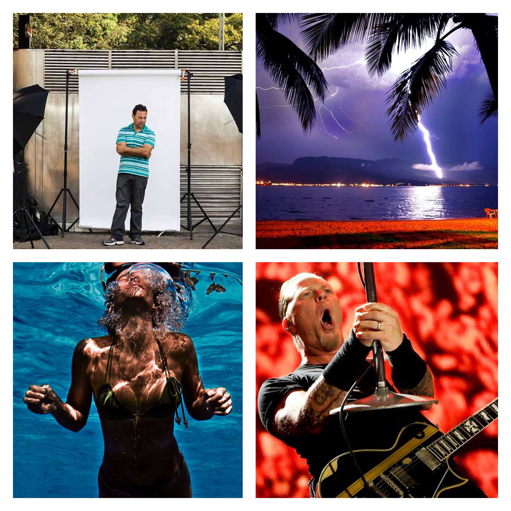

SAMBA - Semana de Produção Multimídia
☰MARCELO

TEMA
"A fotografia instantânea na Comunicação Atual"
A fotografia está cada vez mais inserida no nosso cotidiano. Neste Bate-papo conheceremos a importância dela no mundo atual e como elas podem ser um subsídio para projetos.
Marcelo: Com experiência de quase 20 anos na fotografia, com passagens pelos jornais Diário do Litoral, A Tribuna e Folha de S.Paulo vou apresentar um panorama sobre a situação atual do fotojornalismo nas paginas dos jornais, com o uso de fotos de celulares e reproduções via redes sociais. No último período como editor-assistente de fotografia da Folha, tenho acompanhado essa mutação da fotografia dos jornais e como isso tem impactado as publicações. Fazendo com que haja investimentos em reportagens e multimídias, deixando o factual um pouco de escanteio